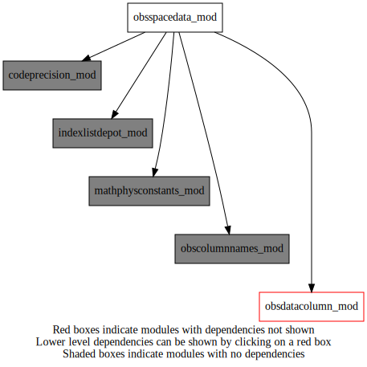
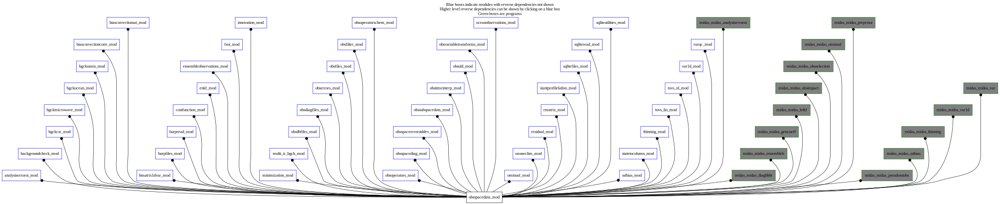
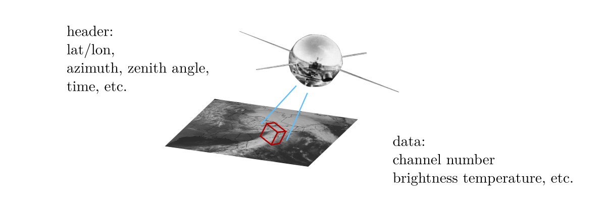
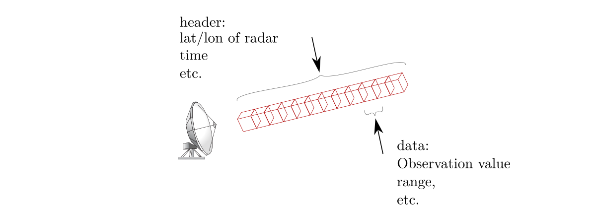
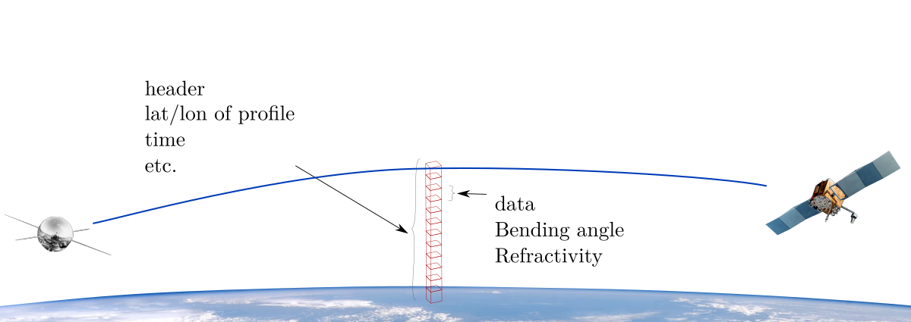

Dependency Diagrams:
 Direct Dependency Diagram¶
 Reverse Dependency Diagram¶
Description
MODULE obsSpaceData_mod (prefix=’obs’ category=’6. High-level data objects’)
- Purpose
This module contains the definition of the structure named “struct_obs” and methods for accessing its data. An instance of struct_obs contains all information pertaining to a set of observation-space data.
This has evolved from the CMA structure, originated in work by D. Vasiljevic at ECMWF.
Very generally, obsSpaceData can be thought as two tables linked to one another.
A “Header” table:
headerIndex
Lat
Lon
…
1
2
…
n_header
and a “data” table:
dataIndex
Associated headerIndex
Obs Value
…
1
1
2
1
3
1
4
1
5
2
6
2
7
3
8
3
9
3
n_data

- For satellite observations
One header contains information on lat/lon, azimuth, zenith angle and time.
Data entries contain: channels, measurement value, etc.

- For radar observations
One header for each radar “ray”. Contains information on lat/lon of radar, elevation, azimuth, etc.
Data entries contain: range, altitude, Doppler velocity, etc.

- For gps radio occultation (GPS-RO)
One header for each profile. Contains information on lat/lon time, etc.
Data entries contain: bending angle, refractivity, etc.
- For other observations types such as radiosondes and aircrafts, there is one data entry per header rentry.
headers contain information on lat/lon, time, etc.
Data entries contain measurement values.
- What
The module “ObsSpaceData_mod” relies on three other modules:
IndexListDepot_mod
ObsColumnNames_mod
ObsDataColumn_mod- Note
Throughout this file:
Column_index is not (in general) indexed from one.
Each column index has an equivalent name,
OBS_*as defined inObsColumnNames_mod.Active_index is indexed from one by definition (a column index).
row_index is indexed from one. It has no equivalent name.
bodyIndex, etc. is necessarily a row index
HeaderIndex, etc. is necessarily a row index- Schematics
Quick access
- Variables
obs_alt,obs_aqf1,obs_aqf2,obs_aqf3,obs_ass,obs_assimilated,obs_aza,obs_bcor,obs_bodyset_r,obs_btcl,obs_bx,obs_by,obs_bz,obs_cf1,obs_cf2,obs_cf3,obs_cf4,obs_cf5,obs_cf6,obs_cf7,obs_chid,obs_chm,obs_cla,obs_clf,obs_clwb,obs_clwo,obs_crps,obs_dat,obs_ecf,obs_etm,obs_etop,obs_flg,obs_fov,obs_fso,obs_geoi,obs_getbodyindex,obs_gqf,obs_gql,obs_haht,obs_hdd,obs_hdt,obs_he,obs_headset_r,obs_hind,obs_hpht,obs_idf,obs_infg,obs_ins,obs_ip,obs_ipc,obs_ipf,obs_ipt,obs_ity,obs_iwv,obs_jobs,obs_kfa,obs_lat,obs_latd,obs_lch,obs_lflg,obs_loci,obs_lon,obs_lond,obs_lyr,obs_m1c1,obs_m1c2,obs_m1c3,obs_m1c4,obs_m1c5,obs_m1c6,obs_m2c1,obs_m2c2,obs_m2c3,obs_m2c4,obs_m2c5,obs_m2c6,obs_m3c1,obs_m3c2,obs_m3c3,obs_m3c4,obs_m3c5,obs_m3c6,obs_m4c1,obs_m4c2,obs_m4c3,obs_m4c4,obs_m4c5,obs_m4c6,obs_m5c1,obs_m5c2,obs_m5c3,obs_m5c4,obs_m5c5,obs_m5c6,obs_m6c1,obs_m6c2,obs_m6c3,obs_m6c4,obs_m6c5,obs_m6c6,obs_m7c1,obs_m7c2,obs_m7c3,obs_m7c4,obs_m7c5,obs_m7c6,obs_missingvalue_r,obs_mws,obs_nco2,obs_nlv,obs_notassimilated,obs_oer,obs_oma,obs_oma0,obs_omam,obs_omp,obs_omp6,obs_ompe,obs_onm,obs_orbi,obs_ori,obs_otp,obs_pas,obs_phas,obs_pob,obs_ppp,obs_prfl,obs_prm,obs_qcf2,obs_qcv,obs_rain,obs_rane,obs_rans,obs_reg,obs_rele,obs_rln,obs_roqf,obs_rtp,obs_rzam,obs_s1c1,obs_s1c2,obs_s1c3,obs_s1c4,obs_s1c5,obs_s1c6,obs_s2c1,obs_s2c2,obs_s2c3,obs_s2c4,obs_s2c5,obs_s2c6,obs_s3c1,obs_s3c2,obs_s3c3,obs_s3c4,obs_s3c5,obs_s3c6,obs_s4c1,obs_s4c2,obs_s4c3,obs_s4c4,obs_s4c5,obs_s4c6,obs_s5c1,obs_s5c2,obs_s5c3,obs_s5c4,obs_s5c5,obs_s5c6,obs_s6c1,obs_s6c2,obs_s6c3,obs_s6c4,obs_s6c5,obs_s6c6,obs_s7c1,obs_s7c2,obs_s7c3,obs_s7c4,obs_s7c5,obs_s7c6,obs_sat,obs_saz,obs_sem,obs_sen,obs_set_current_body_list,obs_set_current_header_list,obs_sib,obs_sigi,obs_sigo,obs_sio,obs_st1,obs_styp,obs_sun,obs_swga,obs_swha,obs_swls,obs_swmt,obs_swq1,obs_swq2,obs_sza,obs_tec,obs_tflg,obs_trad,obs_ttyp,obs_var,obs_vcf,obs_vco,obs_vnm,obs_vtop,obs_work,obs_xtr,obs_zha,obs_zlqm,obs_zps,obs_ztgm,obs_ztm,obs_ztsr- Routines
obs_abort(),obs_allocate(),obs_bodyelem_i(),obs_bodyelem_r(),obs_bodyindex_mpiglobal(),obs_bodyprimarykey(),obs_bodyset_i(),obs_bodyset_r4(),obs_bodyset_r8(),obs_class_initialize(),obs_clean(),obs_clean2(),obs_columnactive_ib(),obs_columnactive_ih(),obs_columnactive_rb(),obs_columnactive_rh(),obs_columndatatype(),obs_columnindexfromname(),obs_columnindexfromname_ib(),obs_columnindexfromname_ih(),obs_columnindexfromname_rb(),obs_columnindexfromname_rh(),obs_columnindexfromnameforflavour(),obs_copy(),obs_deallocate(),obs_elem_c(),obs_enkf_prntbdy(),obs_enkf_prnthdr(),obs_expandtompiglobal(),obs_extractobsintbodycolumn(),obs_extractobsintheadercolumn(),obs_extractobsrealbodycolumn(),obs_extractobsrealbodycolumn_r4(),obs_extractobsrealheadercolumn(),obs_famexist(),obs_finalize(),obs_getbodyindex_depot(),obs_getbodyindex_private(),obs_getfamily(),obs_getheaderindex(),obs_getnchanavhrr(),obs_getnclassavhrr(),obs_headelem_i(),obs_headelem_r(),obs_headerindex_mpiglobal(),obs_headprimarykey(),obs_headset_i(),obs_headset_r4(),obs_headset_r8(),obs_initialize(),obs_iscolumnnamevalid(),obs_mpidistributeindices(),obs_mpilocal(),obs_mpiredistribute(),obs_numbody(),obs_numbody_max(),obs_numbody_mpiglobal(),obs_numheader(),obs_numheader_max(),obs_numheader_mpiglobal(),obs_print(),obs_prntbdy(),obs_prnthdr(),obs_reducetompilocal(),obs_set_c(),obs_set_current_body_list_all(),obs_set_current_body_list_from_family(),obs_set_current_body_list_from_header(),obs_set_current_header_list_all(),obs_set_current_header_list_from_family(),obs_setbodyprimarykey(),obs_setfamily(),obs_setheadprimarykey(),obs_sethind(),obs_squeeze(),obs_write(),obs_write_bdy(),obs_write_hdr(),obs_write_hx()Needed modules
codeprecision_mod: MODULE codePrecision_mod (prefix=’pre’ category=’8. Low-level utilities and constants’)
obscolumnnames_mod: MODULE obsColumnNames_mod (prefix=’ocn’ category=’7. Low-level data objects and utilities’)
obsdatacolumn_mod: MODULE obsDataColumn_mod (prefix=’odc’ category=’7. Low-level data objects and utilities’)
indexlistdepot_mod: MODULE indexListDepot_mod (prefix=’ild’ category=’7. Low-level data objects and utilities’)
mathphysconstants_mod: MODULE MathPhysConstants_mod (prefix=’mpc’ category=’8. Low-level utilities and constants’)Types
- type obsspacedata_mod/unknown_type¶
Variables
- obsspacedata_mod/obs_alt [public]¶
- obsspacedata_mod/obs_aqf1 [public]¶
- obsspacedata_mod/obs_aqf2 [public]¶
- obsspacedata_mod/obs_aqf3 [public]¶
- obsspacedata_mod/obs_ass [public]¶
- obsspacedata_mod/obs_assimilated [integer,parameter/public]¶
OBS_ASS value for assimilated obs
- obsspacedata_mod/obs_aza [public]¶
- obsspacedata_mod/obs_bcor [public]¶
- obsspacedata_mod/obs_bodyset_r [public]¶
set a real body value in the observation object
- obsspacedata_mod/obs_btcl [public]¶
- obsspacedata_mod/obs_bx [public]¶
- obsspacedata_mod/obs_by [public]¶
- obsspacedata_mod/obs_bz [public]¶
- obsspacedata_mod/obs_cf1 [public]¶
- obsspacedata_mod/obs_cf2 [public]¶
- obsspacedata_mod/obs_cf3 [public]¶
- obsspacedata_mod/obs_cf4 [public]¶
- obsspacedata_mod/obs_cf5 [public]¶
- obsspacedata_mod/obs_cf6 [public]¶
- obsspacedata_mod/obs_cf7 [public]¶
- obsspacedata_mod/obs_chid [public]¶
- obsspacedata_mod/obs_chm [public]¶
- obsspacedata_mod/obs_cla [public]¶
- obsspacedata_mod/obs_clf [public]¶
- obsspacedata_mod/obs_clwb [public]¶
- obsspacedata_mod/obs_clwo [public]¶
- obsspacedata_mod/obs_crps [public]¶
- obsspacedata_mod/obs_dat [public]¶
- obsspacedata_mod/obs_ecf [public]¶
- obsspacedata_mod/obs_etm [public]¶
- obsspacedata_mod/obs_etop [public]¶
- obsspacedata_mod/obs_flg [public]¶
- obsspacedata_mod/obs_fov [public]¶
- obsspacedata_mod/obs_fso [public]¶
- obsspacedata_mod/obs_geoi [public]¶
- obsspacedata_mod/obs_getbodyindex [public]¶
obtain an element from the current body list
- obsspacedata_mod/obs_gqf [public]¶
- obsspacedata_mod/obs_gql [public]¶
- obsspacedata_mod/obs_haht [public]¶
- obsspacedata_mod/obs_hdd [public]¶
- obsspacedata_mod/obs_hdt [public]¶
- obsspacedata_mod/obs_he [public]¶
- obsspacedata_mod/obs_headset_r [public]¶
set a real header value in the observation object
- obsspacedata_mod/obs_hind [public]¶
- obsspacedata_mod/obs_hpht [public]¶
- obsspacedata_mod/obs_idf [public]¶
- obsspacedata_mod/obs_infg [public]¶
- obsspacedata_mod/obs_ins [public]¶
- obsspacedata_mod/obs_ip [public]¶
- obsspacedata_mod/obs_ipc [public]¶
- obsspacedata_mod/obs_ipf [public]¶
- obsspacedata_mod/obs_ipt [public]¶
- obsspacedata_mod/obs_ity [public]¶
- obsspacedata_mod/obs_iwv [public]¶
- obsspacedata_mod/obs_jobs [public]¶
- obsspacedata_mod/obs_kfa [public]¶
- obsspacedata_mod/obs_lat [public]¶
- obsspacedata_mod/obs_latd [public]¶
- obsspacedata_mod/obs_lch [public]¶
- obsspacedata_mod/obs_lflg [public]¶
- obsspacedata_mod/obs_loci [public]¶
- obsspacedata_mod/obs_lon [public]¶
- obsspacedata_mod/obs_lond [public]¶
- obsspacedata_mod/obs_lyr [public]¶
- obsspacedata_mod/obs_m1c1 [public]¶
- obsspacedata_mod/obs_m1c2 [public]¶
- obsspacedata_mod/obs_m1c3 [public]¶
- obsspacedata_mod/obs_m1c4 [public]¶
- obsspacedata_mod/obs_m1c5 [public]¶
- obsspacedata_mod/obs_m1c6 [public]¶
- obsspacedata_mod/obs_m2c1 [public]¶
- obsspacedata_mod/obs_m2c2 [public]¶
- obsspacedata_mod/obs_m2c3 [public]¶
- obsspacedata_mod/obs_m2c4 [public]¶
- obsspacedata_mod/obs_m2c5 [public]¶
- obsspacedata_mod/obs_m2c6 [public]¶
- obsspacedata_mod/obs_m3c1 [public]¶
- obsspacedata_mod/obs_m3c2 [public]¶
- obsspacedata_mod/obs_m3c3 [public]¶
- obsspacedata_mod/obs_m3c4 [public]¶
- obsspacedata_mod/obs_m3c5 [public]¶
- obsspacedata_mod/obs_m3c6 [public]¶
- obsspacedata_mod/obs_m4c1 [public]¶
- obsspacedata_mod/obs_m4c2 [public]¶
- obsspacedata_mod/obs_m4c3 [public]¶
- obsspacedata_mod/obs_m4c4 [public]¶
- obsspacedata_mod/obs_m4c5 [public]¶
- obsspacedata_mod/obs_m4c6 [public]¶
- obsspacedata_mod/obs_m5c1 [public]¶
- obsspacedata_mod/obs_m5c2 [public]¶
- obsspacedata_mod/obs_m5c3 [public]¶
- obsspacedata_mod/obs_m5c4 [public]¶
- obsspacedata_mod/obs_m5c5 [public]¶
- obsspacedata_mod/obs_m5c6 [public]¶
- obsspacedata_mod/obs_m6c1 [public]¶
- obsspacedata_mod/obs_m6c2 [public]¶
- obsspacedata_mod/obs_m6c3 [public]¶
- obsspacedata_mod/obs_m6c4 [public]¶
- obsspacedata_mod/obs_m6c5 [public]¶
- obsspacedata_mod/obs_m6c6 [public]¶
- obsspacedata_mod/obs_m7c1 [public]¶
- obsspacedata_mod/obs_m7c2 [public]¶
- obsspacedata_mod/obs_m7c3 [public]¶
- obsspacedata_mod/obs_m7c4 [public]¶
- obsspacedata_mod/obs_m7c5 [public]¶
- obsspacedata_mod/obs_m7c6 [public]¶
- obsspacedata_mod/obs_missingvalue_r [real,parameter/public]¶
- obsspacedata_mod/obs_mws [public]¶
- obsspacedata_mod/obs_nco2 [public]¶
- obsspacedata_mod/obs_nlv [public]¶
- obsspacedata_mod/obs_notassimilated [integer,parameter/public]¶
OBS_ASS value for non assimilated obs
- obsspacedata_mod/obs_oer [public]¶
- obsspacedata_mod/obs_oma [public]¶
- obsspacedata_mod/obs_oma0 [public]¶
- obsspacedata_mod/obs_omam [public]¶
- obsspacedata_mod/obs_omp [public]¶
- obsspacedata_mod/obs_omp6 [public]¶
- obsspacedata_mod/obs_ompe [public]¶
- obsspacedata_mod/obs_onm [public]¶
- obsspacedata_mod/obs_orbi [public]¶
- obsspacedata_mod/obs_ori [public]¶
- obsspacedata_mod/obs_otp [public]¶
- obsspacedata_mod/obs_pas [public]¶
- obsspacedata_mod/obs_phas [public]¶
- obsspacedata_mod/obs_pob [public]¶
- obsspacedata_mod/obs_ppp [public]¶
- obsspacedata_mod/obs_prfl [public]¶
- obsspacedata_mod/obs_prm [public]¶
- obsspacedata_mod/obs_qcf2 [public]¶
- obsspacedata_mod/obs_qcv [public]¶
- obsspacedata_mod/obs_rain [public]¶
- obsspacedata_mod/obs_rane [public]¶
- obsspacedata_mod/obs_rans [public]¶
- obsspacedata_mod/obs_reg [public]¶
- obsspacedata_mod/obs_rele [public]¶
- obsspacedata_mod/obs_rln [public]¶
- obsspacedata_mod/obs_roqf [public]¶
- obsspacedata_mod/obs_rtp [public]¶
- obsspacedata_mod/obs_rzam [public]¶
- obsspacedata_mod/obs_s1c1 [public]¶
- obsspacedata_mod/obs_s1c2 [public]¶
- obsspacedata_mod/obs_s1c3 [public]¶
- obsspacedata_mod/obs_s1c4 [public]¶
- obsspacedata_mod/obs_s1c5 [public]¶
- obsspacedata_mod/obs_s1c6 [public]¶
- obsspacedata_mod/obs_s2c1 [public]¶
- obsspacedata_mod/obs_s2c2 [public]¶
- obsspacedata_mod/obs_s2c3 [public]¶
- obsspacedata_mod/obs_s2c4 [public]¶
- obsspacedata_mod/obs_s2c5 [public]¶
- obsspacedata_mod/obs_s2c6 [public]¶
- obsspacedata_mod/obs_s3c1 [public]¶
- obsspacedata_mod/obs_s3c2 [public]¶
- obsspacedata_mod/obs_s3c3 [public]¶
- obsspacedata_mod/obs_s3c4 [public]¶
- obsspacedata_mod/obs_s3c5 [public]¶
- obsspacedata_mod/obs_s3c6 [public]¶
- obsspacedata_mod/obs_s4c1 [public]¶
- obsspacedata_mod/obs_s4c2 [public]¶
- obsspacedata_mod/obs_s4c3 [public]¶
- obsspacedata_mod/obs_s4c4 [public]¶
- obsspacedata_mod/obs_s4c5 [public]¶
- obsspacedata_mod/obs_s4c6 [public]¶
- obsspacedata_mod/obs_s5c1 [public]¶
- obsspacedata_mod/obs_s5c2 [public]¶
- obsspacedata_mod/obs_s5c3 [public]¶
- obsspacedata_mod/obs_s5c4 [public]¶
- obsspacedata_mod/obs_s5c5 [public]¶
- obsspacedata_mod/obs_s5c6 [public]¶
- obsspacedata_mod/obs_s6c1 [public]¶
- obsspacedata_mod/obs_s6c2 [public]¶
- obsspacedata_mod/obs_s6c3 [public]¶
- obsspacedata_mod/obs_s6c4 [public]¶
- obsspacedata_mod/obs_s6c5 [public]¶
- obsspacedata_mod/obs_s6c6 [public]¶
- obsspacedata_mod/obs_s7c1 [public]¶
- obsspacedata_mod/obs_s7c2 [public]¶
- obsspacedata_mod/obs_s7c3 [public]¶
- obsspacedata_mod/obs_s7c4 [public]¶
- obsspacedata_mod/obs_s7c5 [public]¶
- obsspacedata_mod/obs_s7c6 [public]¶
- obsspacedata_mod/obs_sat [public]¶
- obsspacedata_mod/obs_saz [public]¶
- obsspacedata_mod/obs_sem [public]¶
- obsspacedata_mod/obs_sen [public]¶
- obsspacedata_mod/obs_set_current_body_list [public]¶
set a body list for a family as current
- obsspacedata_mod/obs_set_current_header_list [public]¶
set a header list for a family as current
- obsspacedata_mod/obs_sib [public]¶
- obsspacedata_mod/obs_sigi [public]¶
- obsspacedata_mod/obs_sigo [public]¶
- obsspacedata_mod/obs_sio [public]¶
- obsspacedata_mod/obs_st1 [public]¶
- obsspacedata_mod/obs_styp [public]¶
- obsspacedata_mod/obs_sun [public]¶
- obsspacedata_mod/obs_swga [public]¶
- obsspacedata_mod/obs_swha [public]¶
- obsspacedata_mod/obs_swls [public]¶
- obsspacedata_mod/obs_swmt [public]¶
- obsspacedata_mod/obs_swq1 [public]¶
- obsspacedata_mod/obs_swq2 [public]¶
- obsspacedata_mod/obs_sza [public]¶
- obsspacedata_mod/obs_tec [public]¶
- obsspacedata_mod/obs_tflg [public]¶
- obsspacedata_mod/obs_trad [public]¶
- obsspacedata_mod/obs_ttyp [public]¶
- obsspacedata_mod/obs_var [public]¶
- obsspacedata_mod/obs_vcf [public]¶
- obsspacedata_mod/obs_vco [public]¶
- obsspacedata_mod/obs_vnm [public]¶
- obsspacedata_mod/obs_vtop [public]¶
- obsspacedata_mod/obs_work [public]¶
- obsspacedata_mod/obs_xtr [public]¶
- obsspacedata_mod/obs_zha [public]¶
- obsspacedata_mod/obs_zlqm [public]¶
- obsspacedata_mod/obs_zps [public]¶
- obsspacedata_mod/obs_ztgm [public]¶
- obsspacedata_mod/obs_ztm [public]¶
- obsspacedata_mod/obs_ztsr [public]¶
Subroutines and functions
- subroutine obsspacedata_mod/obs_abort(cdmessage)¶
- Purpose
To stop a job when an error occurred
- Arguments
- Arguments
cdmessage [character ,in] :: message to be printed
- Called from
obs_allocate(),obs_class_initialize(),obs_columnindexfromname(),obs_columnindexfromnameforflavour(),obs_columndatatype(),obs_elem_c(),obs_expandtompiglobal(),obs_extractobsrealheadercolumn(),obs_extractobsintheadercolumn(),obs_getfamily(),obs_initialize(),obs_mpidistributeindices(),obs_reducetompilocal(),obs_set_c(),obs_setfamily(),obs_write_hdr()
- subroutine obsspacedata_mod/obs_allocate(obsdat, numheader_max, numbody_max[, silent])¶
- Purpose
Allocate arrays according to the parameters, numHeader_max and numBody_max. This is a private method.
- Arguments
obsdat [struct_obs ,inout]
numheader_max [integer ,in]
numbody_max [integer ,in]
- Options
silent [logical ,in,]
- Called from
obs_expandtompiglobal(),obs_initialize(),obs_reducetompilocal(),obs_squeeze(),obs_mpiredistribute()- Call to
- function obsspacedata_mod/obs_bodyelem_i(obsdat, column_index, row_index)¶
- Purpose
To control access to the observation object. Returns the (integer) value of the row_index’th ObsData element with the indicated column index from the “body”.
- Arguments
obsdat [struct_obs ,in]
column_index [integer ,in]
row_index [integer ,in]
- Return
value_i [integer ]
- Called from
findobs(),aer_dayssincelastobs(),bgck_data(),bgck_gpsro(),ocebg_bgchecksst(),ocebg_bgcheckseaice(),csrbg_readobsfromobsspace(),mwbg_readobsfromobsspace(),ssbg_updateobsspaceaftersatqc(),ssbg_inovqcssmis(),ssbg_updateobsspaceafterinovqc(),bcc_applyaibcor(),bcc_applygpbcor(),bcc_applyuabcor(),bcs_computepredictorbiases(),bcs_calcbias(),bcs_dumpbiastosqliteafterthinning(),bcs_computeresidualsstatistics(),bcs_removeoutliers(),bcs_calcbias_tl(),bcs_calcbias_ad(),bcs_removebiascorrection(),bcs_filterobs(),bcs_applybiascorrection(),bcs_getradiosondeweight(),bcs_do_regression(),bcs_outputcvomppred(),brpf_setscalech(),brpr_updateburp(),cfn_calcjo(),enkf_rejecthighlatir(),eob_setsimobserrinv(),eob_setvertlocation(),eob_setsimulatedobs(),eob_setmeanomp(),eob_sethpht(),eob_backgroundcheck(),eob_removeobsnearland(),eob_setsigisigo(),eob_hubernorm(),eob_rejectradnearsfc(),fso_ensemble(),sumfso(),inn_perturbobs(),irbg_doqualitycontrol(),setfgefam(),setfgefamz(),setfgett(),setfgesurf(),setfgedif(),setfgegps(),ose_calcompstddevch(),ose_fillompstddevch(),ose_ompstddevexistsforallch(),obsu_updatesourcevariablesflag(),obsu_setassflg(),obsu_computevertcoordsurfobs(),obsu_setgbgpserror(),ovt_windspeeddirectiontouv(),ovt_uvtowindspeeddirection_residual(),ovt_vistologvis(),ovt_vistologvis_residual(),ovt_preciptologprecip(),ovt_preciptologprecip_residual(),ovt_adjusthumgz(),odbf_readmidasbodytable(),odbf_updatemidasbodytable(),diaf_writesqldiagfile(),oer_fillobserrors(),oer_inflateerrallsky(),chanisallsky(),readoerfromobsfileforsw(),oer_sw(),oer_seterrgpsro(),oer_seterrgpsgb(),oer_seterrbackscatanisice(),filt_suprep(),filt_toposurface(),filt_toporadiosonde(),filt_topoaisw(),filt_topoprofiler(),filt_topoaladin(),filt_topotovs(),filt_surfacewind(),filt_radvel(),filt_gpsro(),filt_backscatanisice(),filt_topochemistry(),oop_vobslyrs(),oop_ppp_nl(),oop_zzz_nl(),oop_sfc_nl(),oop_sst_nl(),oop_hydro_nl(),oop_ice_nl(),oop_radvel_nl(),oop_gpsro_nl(),oop_gpsgb_nl(),oop_tovs_nl(),oop_had(),oop_calcgpsrojacobian(),oop_calcgpsgbjacobian(),oop_icescaling(),obs_clean(),obs_clean2(),obs_expandtompiglobal(),obs_extractobsintbodycolumn(),obs_extractobsrealheadercolumn(),obs_extractobsintheadercolumn(),obs_getfamily(),obs_prntbdy(),obs_reducetompilocal(),obs_squeeze(),obs_mpiredistribute(),obs_setfamily(),osd_calcinflation(),osd_getindices(),osd_obsdiagnostics(),osd_readsqrthpht(),oss_get_comboidlist(),oti_timebinning(),res_compute(),res_computead(),rmat_rsqrtinverseallobs(),sqlr_readsqlite(),sqlr_updatesqlite(),sqlr_insertsqlite(),sqlr_writepseudosstobs(),pressureprofilemonotonicitycheck(),thn_surfaceintime(),thn_gpsrovertical(),thn_radiosonde(),tvs_setupalloc(),tvs_getchanprof(),tvs_countradiances(),tvs_gethiremissivities(),tvs_rttov(),tvs_printdetailledomfstatistics(),var1d_setup(),vqc_setup(),vqc_nltl(),vqc_ad(),vqc_listrej(),midas_prepcma- Call to
- function obsspacedata_mod/obs_bodyelem_r(obsdat, column_index, row_index)¶
- Purpose
Get a real-valued body observation-data element To control access to the observation object. Returns the (real) value of the row_index’th ObsData element with the indicated column index from the “body”.
- Arguments
obsdat [struct_obs ,in]
column_index [integer ,in]
row_index [integer ,in]
- Return
value_r [real ]
- Called from
aer_analysiserror(),bgck_data(),bgck_gpsro(),ocebg_bgchecksst(),ocebg_bgcheckseaice(),csrbg_readobsfromobsspace(),csrbg_updateobsspaceafterqc(),mwbg_updateobsspaceafterqc(),mwbg_readobsfromobsspace(),ssbg_satqcssmis(),ssbg_updateobsspaceaftersatqc(),ssbg_inovqcssmis(),ssbg_updateobsspaceafterinovqc(),bcc_applyaibcor(),bcc_applygpbcor(),bcc_applyuabcor(),bcs_calcbias(),bcs_dumpbiastosqliteafterthinning(),bcs_computeresidualsstatistics(),bcs_removeoutliers(),bcs_calcbias_tl(),bcs_calcbias_ad(),bcs_removebiascorrection(),bcs_filterobs(),bcs_applybiascorrection(),bcs_getradiosondeweight(),bcs_do_regression(),bcs_outputcvomppred(),bcs_getchannelindex(),brpf_setscalech(),brpr_updateburp(),brpr_addcloudparametersandemissivity(),cfn_calcjo(),cfn_sumjo(),eob_calcrandpert(),eob_backgroundcheck(),eob_setsigisigo(),eob_hubernorm(),fso_ensemble(),sumfso(),inn_perturbobs(),irbg_doqualitycontrol(),ose_computestddev(),ose_compute_hbht_ensemble(),setfgefam(),setfgefamz(),setfgett(),setfgesurf(),setfgedif(),setfgegps(),ose_calcompstddevch(),ose_fillompstddevch(),ose_ompstddevexistsforallch(),obsu_updatesourcevariablesflag(),obsu_setgbgpserror(),ovt_windspeeddirectiontouv(),ovt_uvtowindspeeddirection_residual(),ovt_vistologvis(),ovt_vistologvis_residual(),ovt_preciptologprecip(),ovt_preciptologprecip_residual(),ovt_adjusthumgz(),odbf_readmidasbodytable(),odbf_adjustvalues(),odbf_updatemidasbodytable(),diaf_writesqldiagfile(),oer_fillobserrors(),oer_inflateerrallsky(),oer_sw(),oer_seterrgpsro(),oer_seterrgpsgb(),filt_suprep(),filt_toposurface(),filt_toporadiosonde(),filt_topoaisw(),filt_topoprofiler(),filt_topoaladin(),filt_surfacewind(),filt_radvel(),filt_gpsro(),filt_topochemistry(),oop_vobslyrs(),oop_ppp_nl(),oop_zzz_nl(),oop_sfc_nl(),oop_sst_nl(),oop_hydro_nl(),oop_ice_nl(),oop_radvel_nl(),oop_gpsro_nl(),oop_gpsgb_nl(),oop_tovs_nl(),oop_had(),oop_calcgpsrojacobian(),oop_calcgpsgbjacobian(),obs_clean(),obs_clean2(),obs_expandtompiglobal(),obs_extractobsrealbodycolumn(),obs_extractobsrealbodycolumn_r4(),obs_prntbdy(),obs_reducetompilocal(),obs_squeeze(),obs_mpiredistribute(),osd_calcinflation(),osd_getindices(),osd_obsdiagnostics(),res_compute(),res_computead(),rmat_rsqrtinverseallobs(),slp_calclatlonro(),sqlr_updatesqlite(),sqlr_insertsqlite(),sqlr_writepseudosstobs(),sstb_getgriddedobs(),sstb_getbiascorrection(),thn_gpsrovertical(),thn_radiosonde(),tvslin_rttov_tl(),tvslin_rttov_ad(),tvs_gethiremissivities(),tvs_printdetailledomfstatistics(),tvs_getchannelnumindexfromppp(),vqc_setup(),vqc_nltl(),vqc_ad(),vqc_listrej(),midas_diaghbht,midas_prepcma- Call to
- function obsspacedata_mod/obs_bodyprimarykey(obsdat, row_index)¶
- Purpose
Get the body primary key value.
- Arguments
obsdat [struct_obs ,in]
row_index [integer ,in]
- Return
primarykey [integer ]
- Called from
odbf_readmidasbodytable(),odbf_updatemidasbodytable(),sqlr_updatesqlite(),sqlr_insertsqlite()
- function obsspacedata_mod/obs_bodyindex_mpiglobal(obsdat, row_index)¶
- Purpose
Get the mpiglobal body row_index. To control access to the mpiglobal row_index into the “body”.
- Arguments
obsdat [struct_obs ,in]
row_index [integer ,in]
- Return
value [integer ]
- subroutine obsspacedata_mod/obs_bodyset_i(obsdat, column_index, row_index, value_i)¶
- Purpose
Set an integer-valued body observation-data element. To control access to the observation object. Sets the (integer) value of the row_index’th ObsData element with the indicated column index from the “body”.
- Arguments
obsdat [struct_obs ,inout]
column_index [integer ,in]
row_index [integer ,in]
value_i [integer ,in]
- Called from
bgck_data(),bgck_gpsro(),ocebg_bgchecksst(),ocebg_bgcheckseaice(),csrbg_updateobsspaceafterqc(),mwbg_updateobsspaceafterqc(),ssbg_updateobsspaceaftersatqc(),ssbg_updateobsspaceafterinovqc(),bcc_applyaibcor(),bcc_applygpbcor(),bcc_applyuabcor(),bcs_removeoutliers(),bcs_filterobs(),bcs_applybiascorrection(),brpf_setscalech(),write_body(),enkf_rejecthighlatir(),eob_readfromfiles(),eob_backgroundcheck(),eob_removeobsnearland(),eob_rejectradnearsfc(),irbg_doqualitycontrol(),obsu_updatesourcevariablesflag(),obsu_setassflg(),obsu_computevertcoordsurfobs(),obsu_setgbgpserror(),ovt_windspeeddirectiontouv(),ovt_uvtowindspeeddirection_residual(),ovt_vistologvis(),ovt_vistologvis_residual(),ovt_preciptologprecip(),ovt_preciptologprecip_residual(),odbf_readmidasbodytable(),odbf_copytoobsspacebody(),odbf_adjustvalues(),oer_fillobserrors(),filt_suprep(),filt_toposurface(),filt_toporadiosonde(),filt_topoaisw(),filt_topoprofiler(),filt_topoaladin(),filt_topotovs(),filt_surfacewind(),filt_radvel(),filt_gpsro(),filt_backscatanisice(),filt_iceconcentration(),filt_topochemistry(),oop_vobslyrs(),oop_zzz_nl(),oop_gpsgb_nl(),obs_clean(),obs_clean2(),obs_expandtompiglobal(),obs_mpiredistribute(),obs_sethind(),oti_flagobsoutsidewindow(),oobs_computeobsdata(),sqlr_readsqlite(),sqlr_addextradatarow(),pressureprofilemonotonicitycheck(),latlonchecksanlgrid(),s2c_rejectzeroweightobs(),latlonchecks(),thn_surfaceintime(),thn_gpsrovertical(),thn_radiosonde(),rejectobs(),tvs_setupalloc(),vqc_listrej(),midas_prepcma- Call to
- subroutine obsspacedata_mod/obs_bodyset_r4(obsdat, column_index, row_index, value_r4)¶
- Purpose
Set a real-valued body observation-data element. To control access to the observation object. Sets the (real) value of the row_index’th ObsData element with the indicated column index from the “body”.
- Arguments
obsdat [struct_obs ,inout]
column_index [integer ,in]
row_index [integer ,in]
value_r4 [real ,in]
- Call to
- subroutine obsspacedata_mod/obs_bodyset_r8(obsdat, column_index, row_index, value_r8)¶
- Purpose
Set a real-valued body observation-data element. To control access to the observation object. Sets the (real) value of the row_index’th ObsData element with the indicated column index from the “body”.
- Arguments
obsdat [struct_obs ,inout]
column_index [integer ,in]
row_index [integer ,in]
value_r8 [real ,in]
- Call to
- subroutine obsspacedata_mod/obs_class_initialize([obscolumnmode_in[, myip]])¶
- Purpose
Set observation-data class variables. Set variables that take the same value for all instances of the class.
- Options
obscolumnmode_in [character ,in,]
myip [integer ,in,]
- Called from
inn_setupobs(),midas_prepcma,midas_pseudosstobs,midas_thinning- Call to
- subroutine obsspacedata_mod/obs_clean(obsdat, hx, nens, nobsout, qcvar[, checkzha_opt])¶
- Purpose
remove all observations from the obsdat that will not be assimilated.
- Arguments
- Arguments
nobsout [integer ,in] :: unit number for the ASCII output
qcvar [logical ,in] :: input logical indicating if the input obsdat data have benefited from a qc-var procedure
obsdat [struct_obs ,inout]
hx (*,*) [real ,inout]
nens [integer ,in]
- The logic applied
A body (and its associated header) will be retained if these three conditions are all met:
either of:
1a) btest(obsdat%intBodies%columns(OBS_FLG,jdata),12)
1b) .not. qcvar (the 5th parameter of obs_clean)
obsdat% intBodies%columns(OBS_ASS,jdata) == 1
obsdat%realBodies%columns(OBS_ZHA,jdata) >= 0.0
- Options
checkzha_opt [logical ,in,]
- Called from
- Call to
obs_headelem_i(),obs_bodyelem_i(),obs_bodyelem_r(),obs_bodyset_i(),odc_numactivecolumn(),odc_columnindexfromactiveindex(),obs_headset_i(),obs_headelem_r()
- subroutine obsspacedata_mod/obs_clean2(obsdat)¶
- Purpose
remove all observations from the obsdat that will not be assimilated. modified version of obs_clean, used by MIDAS
- Arguments
obsdat [struct_obs ,inout]
- Called from
- Call to
obs_headelem_i(),obs_bodyelem_i(),odc_numactivecolumn(),odc_columnindexfromactiveindex(),obs_bodyset_i(),obs_bodyelem_r(),obs_headset_i(),obs_headelem_r(),obs_squeeze()
- function obsspacedata_mod/obs_columnactive_ib(obsdat, column_index)¶
- Purpose
Return the active status for a column
- Arguments
obsdat [struct_obs ,inout]
column_index [integer ]
- Return
columnactive [logical ]
- Called from
- function obsspacedata_mod/obs_columnactive_ih(obsdat, column_index)¶
- Purpose
Return the active status for a column
- Arguments
obsdat [struct_obs ,inout]
column_index [integer ]
- Return
columnactive [logical ]
- Called from
brpr_readburp(),write_header(),writeinfo(),setinfotomissing(),inn_setupobs(),setobsmpistrategy(),odbf_copytoobsspacehead(),sqlr_readsqlite()
- function obsspacedata_mod/obs_columnactive_rb(obsdat, column_index)¶
- Purpose
Return the active status for a column
- Arguments
obsdat [struct_obs ,inout]
column_index [integer ]
- Return
columnactive [logical ]
- Called from
brpf_readfile(),brpr_updateburp(),write_body(),odbf_readfile(),odbf_readmidasbodytable(),odbf_copytoobsspacebody(),odbf_adjustvalues(),diaf_writesqldiagfile(),sqlf_readfile(),sqlr_readsqlite(),tvs_rttov()
- function obsspacedata_mod/obs_columnactive_rh(obsdat, column_index)¶
- Purpose
Return the active status for a column
- Arguments
obsdat [struct_obs ,inout]
column_index [integer ]
- Return
columnactive [logical ]
- Called from
brpr_readburp(),writeinfo(),setinfotomissing(),odbf_copytoobsspacehead(),sqlr_readsqlite_avhrr()
- function obsspacedata_mod/obs_columnindexfromname(column_name)¶
- Purpose
Situations do occur where the client knows only the name of a column, but needs to know its index. This method supplies the index.
- Arguments
column_name [character ,in]
- Return
column_index_out [integer ]
- Called from
odbf_readmidasbodytable(),odbf_copytoobsspacehead(),odbf_copytoobsspacebody(),odbf_updatemidasheadertable(),odbf_updatemidasbodytable(),odbf_createmidasbodytable(),odbf_addcolumnsmidastable()- Call to
- function obsspacedata_mod/obs_iscolumnnamevalid(column_name)¶
- Purpose
Check if the obsSpaceData column name is valid.
- Arguments
column_name [character ,in]
- Return
isvalid [logical ]
- Called from
- Call to
- function obsspacedata_mod/obs_columnindexfromnameforflavour(odc_flavour, column_name)¶
- Purpose
Situations do occur where the client knows only the name of a column, but needs to know its index. This method supplies the index.
- Arguments
odc_flavour [struct_odc_flavour ,in]
column_name [character ,in]
- Return
column_index_out [integer ]
- Called from
obs_columnindexfromname_ib(),obs_columnindexfromname_ih(),obs_columnindexfromname_rb(),obs_columnindexfromname_rh()- Call to
- function obsspacedata_mod/obs_columnindexfromname_ib(column_name)¶
- Purpose
This wrapper around obs_columnIndexFromName selects the data-column flavour.
- Arguments
column_name [character ,in]
- Return
column_index [integer ]
- Call to
- function obsspacedata_mod/obs_columnindexfromname_ih(column_name)¶
- Purpose
This wrapper around obs_columnIndexFromName selects the data-column flavour.
- Arguments
column_name [character ,in]
- Return
column_index [integer ]
- Call to
- function obsspacedata_mod/obs_columnindexfromname_rb(column_name)¶
- Purpose
This wrapper around obs_columnIndexFromName selects the data-column flavour.
- Arguments
column_name [character ,in]
- Return
column_index [integer ]
- Call to
- function obsspacedata_mod/obs_columnindexfromname_rh(column_name)¶
- Purpose
This wrapper around obs_columnIndexFromName selects the data-column flavour.
- Arguments
column_name [character ,in]
- Return
column_index [integer ]
- Call to
- function obsspacedata_mod/obs_columndatatype(columnindex)¶
- Purpose
return the data type of column, either ‘real’ or ‘integer’
- Arguments
columnindex [integer ,in]
- Return
datatype [character ]
- Called from
odbf_readmidasbodytable(),odbf_copytoobsspacehead(),odbf_copytoobsspacebody(),odbf_updatemidasheadertable(),odbf_updatemidasbodytable(),odbf_createmidasbodytable(),odbf_addcolumnsmidastable(),sqlr_addcolumn()- Call to
- subroutine obsspacedata_mod/obs_copy(obs_a, obs_b)¶
- Purpose
copy an obsdat object
- Arguments
- Arguments
obs_a [struct_obs ,in] :: input object
obs_b [struct_obs ,inout] :: a copy of obs_a
- Note
this method assumes that obs_b has already been initialized
- Called from
- subroutine obsspacedata_mod/obs_deallocate(obsdat)¶
- Purpose
De-allocate arrays. This is a private method.
- Arguments
obsdat [struct_obs ,inout]
- Called from
obs_expandtompiglobal(),obs_finalize(),obs_reducetompilocal(),obs_squeeze(),obs_mpiredistribute()- Call to
- function obsspacedata_mod/obs_elem_c(obsdat, name, row_index)¶
- Purpose
Get a character-string-valued observation-data element. To control access to the observation object. Returns the (character) value of the ObsData element with the indicated name and row_index.
- Arguments
obsdat [struct_obs ,in]
name [character ,in]
row_index [integer ,in]
- Return
value [character ]
- Called from
bgck_data(),ocebg_bgchecksst(),ocebg_bgcheckseaice(),csrbg_readobsfromobsspace(),mwbg_readobsfromobsspace(),ssbg_satqcssmis(),ssbg_inovqcssmis(),bcc_applyaibcor(),bcc_applygpbcor(),bcc_applyuabcor(),brpr_updateburp(),cfn_sumjo(),setfgesurf(),setfgegps(),ose_calcompstddevch(),ose_fillompstddevch(),diaf_writesqldiagfile(),oer_fillobserrors(),oer_sw(),filt_surfacewind(),filt_iceconcentration(),filt_topochemistry(),oop_gpsgb_nl(),oop_calcgpsgbjacobian(),obs_prnthdr(),osd_obsdiagnostics(),osd_readsqrthpht(),oss_get_comboidlist(),oti_setup(),sqlr_writepseudosstobs(),sstb_getgriddedobs(),sstb_getbiascorrection(),s2c_getfootprintradius(),thn_surfaceintime(),thn_radiosonde(),vqc_listrej()- Call to
- subroutine obsspacedata_mod/obs_enkf_prntbdy(obsdat, kstn, kulout)¶
- Purpose
print all data records associated with an observation
- Arguments
- Arguments
kstn [integer ,in] :: no. of station
kulout [integer ,in] :: unit used for printing
obsdat [struct_obs ,in]
- Called from
- Call to
- subroutine obsspacedata_mod/obs_enkf_prnthdr(obsdata, kobs, kulout)¶
- Purpose
printing of the header of an observation record
- Arguments
- Arguments
kobs [integer ,in] :: no. of observation
kulout [integer ,in] :: unit used for optional printing
obsdata [struct_obs ,in]
- Called from
- Call to
- subroutine obsspacedata_mod/obs_expandtompiglobal(obsdat)¶
- Purpose
restore Global array realBodies and intBodies. To reconstitute the mpi-global observation object by gathering the necessary data from all processors (to all processors).
- Note
for the character data cstnid(:), this is converted to integers with IACHAR and back to characters with ACHAR, to facilitate this gather through rpn_comm_allreduce
- Arguments
obsdat [struct_obs ,inout]
- Called from
midas_analysiserroroi,midas_diaghbht,midas_obsimpact,midas_prepcma,midas_var,midas_var1d- Call to
obs_abort(),obs_numheader_mpiglobal(),obs_numbody_mpiglobal(),obs_numheader(),obs_numbody(),obs_bodyelem_i(),obs_bodyset_i(),odc_numactivecolumn(),odc_columnindexfromactiveindex(),obs_headelem_i(),obs_headelem_r(),obs_bodyelem_r(),obs_deallocate(),obs_allocate()
- subroutine obsspacedata_mod/obs_extractobsrealbodycolumn(realbodycolumn, obsspacedata, obscolumnindex)¶
- Purpose
Extract contents of a real body column into a vector.
- Arguments
realbodycolumn (*) [real ,out]
obsspacedata [struct_obs ]
obscolumnindex [integer ]
- Called from
eob_setlatlonobs(),eob_setobserrinv(),eob_setsimobserrinv(),eob_setvertlocation(),eob_setdeteryb()- Call to
- subroutine obsspacedata_mod/obs_extractobsrealbodycolumn_r4(realbodycolumn, obsspacedata, obscolumnindex)¶
- Purpose
Extract contents of a real body column into a vector.
- Arguments
realbodycolumn (*) [real ,out]
obsspacedata [struct_obs ]
obscolumnindex [integer ]
- Called from
- Call to
- subroutine obsspacedata_mod/obs_extractobsintbodycolumn(intbodycolumn, obsspacedata, obscolumnindex)¶
- Purpose
Extract contents of an integer body column into a vector.
- Arguments
intbodycolumn (*) [integer ,out]
obsspacedata [struct_obs ]
obscolumnindex [integer ]
- Called from
eob_writetofiles(),eob_readfromfiles(),eob_setvertlocation(),eob_setassflag()- Call to
- subroutine obsspacedata_mod/obs_extractobsrealheadercolumn(realheadercolumn, obsspacedata, obscolumnindex)¶
- Purpose
Extract contents of a real header column into a vector. Note that the output can be either in the form of a vector with length equal to the number of rows in the body OR header table.
- Arguments
realheadercolumn (*) [real ,out]
obsspacedata [struct_obs ]
obscolumnindex [integer ]
- Called from
- Call to
obs_numbody(),obs_bodyelem_i(),obs_headelem_r(),obs_numheader(),obs_abort()
- subroutine obsspacedata_mod/obs_extractobsintheadercolumn(intheadercolumn, obsspacedata, obscolumnindex)¶
- Purpose
Extract contents of an integer header column into a vector. Note that the output can be either in the form of a vector with length equal to the number of rows in the body OR header table.
- Arguments
intheadercolumn (*) [integer ,out]
obsspacedata [struct_obs ]
obscolumnindex [integer ]
- Called from
- Call to
obs_numbody(),obs_bodyelem_i(),obs_headelem_i(),obs_numheader(),obs_abort()
- subroutine obsspacedata_mod/obs_finalize(obsdat)¶
- Purpose
De-allocate memory and clean up the object. De-allocate object arrays, and perform any other clean-up that is necessary before object deletion.
- Arguments
obsdat [struct_obs ,inout]
- Called from
obs_mpiredistribute(),oobs_computeobsdata(),midas_sstbias,midas_analysiserroroi,midas_diaghbht,midas_gencoeff,midas_ominusf,midas_obsimpact,midas_obsselection,midas_prepcma,midas_thinning,midas_var,midas_var1d- Call to
- function obsspacedata_mod/obs_getbodyindex_depot(obsdat)¶
- Purpose
Return the next element from the current body list
- Arguments
obsdat [struct_obs ,inout]
- Return
row_index [integer ]
- function obsspacedata_mod/obs_getbodyindex_private(private_list)¶
- Purpose
Return the next element from the supplied private body list
- Arguments
private_list [struct_index_list ,inout,pointer]
- Return
row_index [integer ]
- function obsspacedata_mod/obs_getfamily(obsdat[, headerindex_in[, bodyindex]])¶
- Purpose
Return the family for the indicated header, or else for the indicated body.
- Arguments
obsdat [struct_obs ,in]
- Options
headerindex_in [integer ,in,]
bodyindex [integer ,in,]
- Return
obs_getfamily [character ]
- Called from
cfn_sumjo(),eob_setsimobserrinv(),eob_setsimulatedobs(),sumfso(),inn_perturbobs(),setfgesurf(),odbf_adjustvalues(),diaf_getobsfamilylistmpiglobal(),oer_fillobserrors(),readoerfromobsfileforsw(),obs_famexist(),oti_timebinning(),s2c_getfootprintradius(),vqc_nltl(),vqc_ad()- Call to
- function obsspacedata_mod/obs_getnclassavhrr()¶
- Purpose
to get the number of AVHRR radiance classes
- Return
obs_getnclassavhrr [integer ]
- Called from
- Purpose
to get the number of AVHRR channels
- Return
obs_getnchanavhrr [integer ]
- Called from
- function obsspacedata_mod/obs_getheaderindex(obsdat)¶
- Purpose
Return the next element from the current header list.
- Arguments
obsdat [struct_obs ,inout]
- Return
row_index [integer ]
- Called from
bgck_data(),bgck_gpsro(),csrbg_bgcheckcsr(),mwbg_computemwhs2surfacetype(),mwbg_bgcheckmw(),ssbg_computessmissurfacetype(),ssbg_bgcheckssmis(),bcc_applyaibcor(),bcc_applygpbcor(),bcc_applyuabcor(),bcs_computepredictorbiases(),bcs_calcbias(),bcs_dumpbiastosqliteafterthinning(),bcs_computeresidualsstatistics(),bcs_removeoutliers(),bcs_calcbias_tl(),bcs_gettrialpredictors(),bcs_calcbias_ad(),bcs_filterobs(),bcs_getradiosondeweight(),bcs_do_regression(),bcs_outputcvomppred(),getinitialidobsdata(),brpf_updatefile(),brpr_addcloudparametersandemissivity(),irbg_bgcheckir(),irbg_doqualitycontrol(),setfgefam(),setfgefamz(),setfgedif(),setfgegps(),ose_calcompstddevch(),ose_fillompstddevch(),ose_ompstddevexistsforallch(),diaf_writesqldiagfile(),oer_seterrgpsro(),oer_seterrgpsgb(),oer_seterrbackscatanisice(),obsf_updatemissingobsflags(),filt_toposurface(),filt_toporadiosonde(),filt_topoprofiler(),filt_topoaladin(),filt_topotovs(),filt_surfacewind(),filt_radvel(),filt_gpsro(),filt_iceconcentration(),filt_topochemistry(),oop_sfc_nl(),oop_sst_nl(),oop_hydro_nl(),oop_radvel_nl(),oop_gpsro_nl(),oop_gpsgb_nl(),oop_tovs_nl(),oop_calcgpsrojacobian(),oop_calcgpsgbjacobian(),obs_set_current_body_list_from_family(),obs_set_current_body_list_all(),osd_obsdiagnostics(),osd_readsqrthpht(),oss_get_comboidlist(),sqlu_getinitialidobsdata(),sqlr_writepseudosstobs(),pressureprofilemonotonicitycheck(),thn_surfaceintime(),thn_gpsrovertical(),thn_radiosonde(),tvs_setupalloc(),tvs_printdetailledomfstatistics(),vqc_listrej()
- function obsspacedata_mod/obs_headelem_i(obsdat, column_index, row_index)¶
- Purpose
Get an integer-valued header observation-data element. To control access to the observation object. Returns the (integer) value of the row_index’th ObsData element with the indicated column index from the “header”.
- Arguments
obsdat [struct_obs ,in]
column_index [integer ,in]
row_index [integer ,in]
- Return
value_i [integer ]
- Called from
findobs(),aer_dayssincelastobs(),bgck_data(),bgck_gpsro(),ocebg_bgchecksst(),ocebg_bgcheckseaice(),csrbg_bgcheckcsr(),csrbg_readobsfromobsspace(),csrbg_updateobsspaceafterqc(),mwbg_computemwhs2surfacetype(),mwbg_updateobsspaceafterqc(),mwbg_readobsfromobsspace(),mwbg_bgcheckmw(),ssbg_computessmissurfacetype(),ssbg_satqcssmis(),ssbg_updateobsspaceaftersatqc(),ssbg_inovqcssmis(),ssbg_updateobsspaceafterinovqc(),ssbg_bgcheckssmis(),bcc_applyaibcor(),bcc_applyuabcor(),bcs_computepredictorbiases(),bcs_calcbias(),bcs_dumpbiastosqliteafterthinning(),bcs_computeresidualsstatistics(),bcs_removeoutliers(),bcs_calcbias_tl(),bcs_gettrialpredictors(),bcs_calcbias_ad(),bcs_filterobs(),bcs_getradiosondeweight(),bcs_do_regression(),bcs_outputcvomppred(),getinitialidobsdata(),brpf_setscalech(),brpr_updateburp(),brpr_readburp(),writeinfo(),brpr_addcloudparametersandemissivity(),cfn_sumjo(),enkf_modifyamsubobserror(),enkf_rejecthighlatir(),eob_backgroundcheck(),eob_removeobsnearland(),eob_hubernorm(),fso_ensemble(),sumfso(),irbg_bgcheckir(),irbg_doqualitycontrol(),setfgefamz(),setfgedif(),setfgegps(),ose_calcompstddevch(),ose_fillompstddevch(),ose_ompstddevexistsforallch(),obsu_updatesourcevariablesflag(),obsu_computevertcoordsurfobs(),obsu_setgbgpserror(),ovt_windspeeddirectiontouv(),ovt_uvtowindspeeddirection_residual(),ovt_vistologvis(),ovt_vistologvis_residual(),ovt_preciptologprecip(),ovt_preciptologprecip_residual(),ovt_adjusthumgz(),odbf_readfile(),odbf_readmidasbodytable(),odbf_copytoobsspacebody(),odbf_adjustvalues(),odbf_updatemidasheadertable(),odbf_updatemidasbodytable(),diaf_writesqldiagfile(),oer_fillobserrors(),readoerfromobsfileforsw(),oer_sw(),oer_seterrgpsro(),oer_seterrgpsgb(),oer_seterrbackscatanisice(),obsf_updatemissingobsflags(),filt_suprep(),filt_topotovs(),filt_surfacewind(),filt_gpsro(),filt_iceconcentration(),filt_topochemistry(),oop_vobslyrs(),oop_zzz_nl(),oop_ice_nl(),oop_gpsro_nl(),oop_gpsgb_nl(),oop_tovs_nl(),oop_calcgpsrojacobian(),oop_calcgpsgbjacobian(),oop_icescaling(),obs_clean(),obs_clean2(),obs_enkf_prntbdy(),obs_enkf_prnthdr(),obs_expandtompiglobal(),obs_extractobsintheadercolumn(),obs_mpidistributeindices(),obs_prntbdy(),obs_prnthdr(),obs_reducetompilocal(),obs_squeeze(),obs_mpiredistribute(),obs_set_current_body_list_from_family(),obs_set_current_body_list_from_header(),obs_set_current_body_list_all(),obs_sethind(),obs_write_bdy(),obs_write_hdr(),obs_write_hx(),osd_getindices(),osd_obsdiagnostics(),osd_readsqrthpht(),oss_get_comboidlist(),oti_timebinning(),oti_setup(),oti_flagobsoutsidewindow(),rmat_rsqrtinverseallobs(),slp_calclatlontovs(),sqlu_getinitialidobsdata(),sqlr_updatesqlite(),sqlr_addcloudparametersandemissivity(),sqlr_insertsqlite(),sqlr_writepseudosstobs(),sstb_getgriddedobs(),sstb_getbiascorrection(),pressureprofilemonotonicitycheck(),latlonchecksanlgrid(),s2c_setupinterpinfo(),s2c_getfootprintradius(),s2c_rejectzeroweightobs(),latlonchecks(),gettovsfootprintradius(),thn_surfaceintime(),thn_radiosonde(),tvs_setupalloc(),tvs_getchanprof(),tvs_countradiances(),tvs_changedstypvalue(),tvs_gethiremissivities(),tvs_rttov(),tvs_printdetailledomfstatistics(),var1d_setup(),vqc_setup(),vqc_nltl(),vqc_listrej(),midas_prepcma- Call to
- function obsspacedata_mod/obs_headelem_r(obsdat, column_index, row_index)¶
- Purpose
Get a real-valued header observation-data element. To control access to the observation object. Returns the (real) value of the row_index’th ObsData element with the indicated column index from the “header”.
- Arguments
obsdat [struct_obs ,in]
column_index [integer ,in]
row_index [integer ,in]
- Return
value_r [real ]
- Called from
findobs(),bgck_data(),bgck_gpsro(),ocebg_bgchecksst(),csrbg_readobsfromobsspace(),mwbg_computemwhs2surfacetype(),mwbg_readobsfromobsspace(),ssbg_computessmissurfacetype(),ssbg_satqcssmis(),ssbg_inovqcssmis(),bcc_applyuabcor(),bcs_dumpbiastosqliteafterthinning(),bcs_getpredictors(),bmat1d_bsqrthi(),bmat1d_bsqrthiad(),brpr_addcloudparametersandemissivity(),enkf_modifyamsubobserror(),enkf_rejecthighlatir(),eob_removeobsnearland(),setobsmpistrategy(),irbg_doqualitycontrol(),setfgefamz(),setfgedif(),setfgegps(),ose_calcompstddevch(),ose_fillompstddevch(),obsu_computevertcoordsurfobs(),odbf_adjustvalues(),odbf_updatemidasheadertable(),diaf_writesqldiagfile(),oer_fillobserrors(),oer_inflateerrallsky(),oer_sw(),oer_seterrgpsro(),filt_toporadiosonde(),filt_topoprofiler(),filt_surfacewind(),filt_radvel(),filt_gpsro(),filt_backscatanisice(),oop_vobslyrs(),oop_ppp_nl(),oop_radvel_nl(),oop_gpsro_nl(),oop_gpsgb_nl(),oop_calcgpsrojacobian(),oop_calcgpsgbjacobian(),obs_clean(),obs_clean2(),obs_enkf_prnthdr(),obs_expandtompiglobal(),obs_extractobsrealheadercolumn(),obs_prnthdr(),obs_reducetompilocal(),obs_squeeze(),obs_mpiredistribute(),obs_write_hdr(),osd_getindices(),osd_obsdiagnostics(),osd_readsqrthpht(),slp_calclatlontovs(),findintersectlatlon(),slp_calclatlonro(),slp_calclatlonradar(),sqlr_addcloudparametersandemissivity(),sqlr_writepseudosstobs(),sstb_getgriddedobs(),sstb_getbiascorrection(),latlonchecksanlgrid(),s2c_setupinterpinfo(),s2c_bgcheck_bilin(),thn_surfaceintime(),thn_radiosonde(),tvs_fillprofiles(),tvs_getcorrectedsatelliteazimuth(),var1d_transfercolumntoygrid(),vqc_setup(),vqc_listrej(),midas_prepcma- Call to
- function obsspacedata_mod/obs_headprimarykey(obsdat, row_index)¶
- Purpose
Get the header primary key value.
- Arguments
obsdat [struct_obs ,in]
row_index [integer ,in]
- Return
primarykey [integer ]
- Called from
odbf_copytoobsspacebody(),odbf_updatemidasheadertable(),odbf_updatemidasbodytable(),sqlr_readsqlite_avhrr(),sqlr_updatesqlite(),sqlr_addcloudparametersandemissivity(),sqlr_insertsqlite()
- function obsspacedata_mod/obs_headerindex_mpiglobal(obsdat, row_index)¶
- Purpose
Get the mpiglobal header row index. To control access to the mpiglobal row_index into the “header”.
- Arguments
obsdat [struct_obs ,in]
row_index [integer ,in]
- Return
value [integer ]
- subroutine obsspacedata_mod/obs_headset_i(obsdat, column_index, row_index, value_i)¶
- Purpose
set an integer-valued header observation-data element. To control access to the observation object. Sets the (integer) value of the row_index’th ObsData element with the indicated column index from the “header”.
- Arguments
obsdat [struct_obs ,inout]
column_index [integer ,in]
row_index [integer ,in]
value_i [integer ,in]
- Called from
bgck_data(),ocebg_bgchecksst(),mwbg_computemwhs2surfacetype(),mwbg_updateobsspaceafterqc(),ssbg_computessmissurfacetype(),ssbg_satqcssmis(),ssbg_updateobsspaceaftersatqc(),ssbg_updateobsspaceafterinovqc(),bcc_applyaibcor(),brpf_readfile(),brpr_readburp(),write_header(),write_qi(),writeinfo(),setinfotomissing(),setobsmpistrategy(),irbg_doqualitycontrol(),odbf_readfile(),odbf_setsurfacetype(),odbf_copytoobsspaceheadchar(),odbf_copytoobsspaceheaddate(),odbf_copytoobsspacehead(),odbf_copytoobsspacebody(),odbf_adjustvalues(),obs_clean(),obs_clean2(),oti_flagobsoutsidewindow(),oobs_computeobsdata(),sqlf_readfile(),sqlr_readsqlite(),pressureprofilemonotonicitycheck(),latlonchecksanlgrid(),s2c_rejectzeroweightobs(),latlonchecks(),vqc_listrej()- Call to
- subroutine obsspacedata_mod/obs_headset_r4(obsdat, column_index, row_index, value_r4)¶
- Purpose
set a real header value in the observation object. To control access to the observation object. Sets the (real) value of the row_index’th ObsData element with the indicated column index from the “header”.
- Arguments
obsdat [struct_obs ,inout]
column_index [integer ,in]
row_index [integer ,in]
value_r4 [real ,in]
- Call to
- subroutine obsspacedata_mod/obs_headset_r8(obsdat, column_index, row_index, value_r8)¶
- Purpose
set a real header value in the observation object. To control access to the observation object. Sets the (real) value of the row_index’th ObsData element with the indicated column index from the “header”.
- Arguments
obsdat [struct_obs ,inout]
column_index [integer ,in]
row_index [integer ,in]
value_r8 [real ,in]
- Call to
- subroutine obsspacedata_mod/obs_initialize(obsdat[, numheader_max[, numbody_max[, mpi_local[, silent]]]])¶
- Purpose
Set an observation-data module to a known state. Initialize object variables, and allocate arrays according to the parameters, header_max and body_max.
- Arguments
obsdat [struct_obs ,inout] :: inout allows detection of 2nd call
- Options
numheader_max [integer ,in,]
numbody_max [integer ,in,]
mpi_local [logical ,in,]
silent [logical ,in,]
- Called from
inn_setupobs(),obs_mpiredistribute(),oobs_pseudosst(),oobs_computeobsdata(),midas_prepcma,midas_thinning- Call to
- subroutine obsspacedata_mod/obs_mpidistributeindices(obsdat)¶
- Purpose
Compute headerIndex_mpiglobal and bodyIndex_mpiglobal: this determines how obs are distributed over MPI processes and is needed for converting from mpiglobal to mpilocal and vice versa. The header indices are distributed following the chosen strategy, currently either “round robin” or by latitude bands.
- Note
this subroutine is called before converting from mpiglobal to mpilocal
- Comments
In principle this method could have obtained my_mpi_id by use’ing the module, mpi. However, it queries rpn_comm for itself because the mpi module belongs to the 3dvar code, whereas the present module is shared code.
- Arguments
obsdat [struct_obs ,inout]
- Called from
- Call to
- function obsspacedata_mod/obs_mpilocal(obsdat)¶
- Purpose
- returns true if the object contains only data that are
needed by the current mpi PE; false if it contains all data.
To provide the state of the internal variable, mpiLocal. This method exists primarily to facilitate unit tests on this module.
- Arguments
obsdat [struct_obs ,in]
- Return
obs_mpilocal [logical ]
- Called from
bcs_dumpbiastosqliteafterthinning(),diaf_writesqldiagfile(),obsf_writeascidump(),sqlr_writepseudosstobs(),sqlr_writeemptypseudosstobsfile()
- function obsspacedata_mod/obs_numbody(obsdat)¶
- Purpose
returns the number of mpi-local bodies recorded. To provide the number of bodies that are currently recorded in the mpi-local observation-data object.
- Arguments
obsdat [struct_obs ,in]
- Return
obs_numbody [integer ]
- Called from
brpf_readfile(),write_body(),cfn_calcjo(),cfn_sumjo(),eob_setsigisigo(),eob_rejectradnearsfc(),sumfso(),inn_perturbobs(),ose_computestddev(),ose_compute_hbht_ensemble(),setfgett(),setfgesurf(),obsu_updatesourcevariablesflag(),obsu_setassflg(),ovt_uvtowindspeeddirection_residual(),ovt_vistologvis_residual(),ovt_preciptologprecip_residual(),odbf_readfile(),filt_suprep(),filt_toposurface(),filt_toporadiosonde(),filt_topoaisw(),filt_topoprofiler(),filt_topoaladin(),filt_topotovs(),filt_surfacewind(),filt_topochemistry(),oop_vobslyrs(),oop_tovs_nl(),obs_expandtompiglobal(),obs_extractobsrealbodycolumn(),obs_extractobsrealbodycolumn_r4(),obs_extractobsintbodycolumn(),obs_extractobsrealheadercolumn(),obs_extractobsintheadercolumn(),obs_reducetompilocal(),obs_mpiredistribute(),osd_calcinflation(),omf_ominusfens(),res_compute(),res_computead(),sqlf_readfile(),sqlr_readsqlite(),vqc_nltl(),vqc_ad(),midas_diaghbht,midas_ensembleh,midas_letkf,midas_prepcma
- function obsspacedata_mod/obs_numbody_max(obsdat)¶
- Purpose
returns the dimensioned mpi-local number of bodies. To provide the dimension for the number of bodies in the mpi-local observation-data object.
- Arguments
obsdat [struct_obs ,in]
- Return
obs_numbody_max [integer ]
- function obsspacedata_mod/obs_numbody_mpiglobal(obsdat)¶
- Purpose
- returns the number of bodies recorded in the
entire mpi-global obs object.
To provide the number of bodies that are currently recorded in the entire mpi-global observation-data object.
- Arguments
obsdat [struct_obs ,in]
- Return
obs_numbody_mpiglobal [integer ]
- Called from
- function obsspacedata_mod/obs_numheader(obsdat)¶
- Purpose
returns the number of mpi-local headers recorded. To provide the number of headers that are currently recorded in the observation-data object.
- Arguments
obsdat [struct_obs ,in]
- Return
obs_numheader [integer ]
- Called from
aer_analysiserror(),findobs(),aer_dayssincelastobs(),ocebg_bgchecksst(),ocebg_bgcheckseaice(),mwbg_bgcheckmw(),ssbg_satqcssmis(),bcs_getradiosondeweight(),bmat1d_setupbens(),brpf_readfile(),brpr_updateburp(),brpr_readburp(),write_body(),write_header(),write_qi(),write_al(),writeinfo(),setinfotomissing(),cfn_sumjo(),enkf_modifyamsubobserror(),enkf_rejecthighlatir(),eob_backgroundcheck(),eob_removeobsnearland(),eob_hubernorm(),fso_ensemble(),inn_setupcolumnsontrllev(),setobsmpistrategy(),quasinewtonminimization(),ose_computestddev(),ovt_transformobsvalues(),ovt_transformresiduals(),odbf_readfile(),odbf_readmidasbodytable(),odbf_updatemidasheadertable(),odbf_updatemidasbodytable(),diaf_getobsfamilylistmpiglobal(),oer_fillobserrors(),readoerfromobsfileforsw(),oer_seterrbackscatanisice(),obsf_writehx(),obs_expandtompiglobal(),obs_extractobsrealheadercolumn(),obs_extractobsintheadercolumn(),obs_reducetompilocal(),obs_mpiredistribute(),obs_sethind(),obs_famexist(),oti_timebinning(),omf_ominusf(),omf_ominusfens(),rmat_rsqrtinverseallobs(),sqlf_readfile(),sqlr_readsqlite(),sqlr_updatesqlite(),sqlr_addcloudparametersandemissivity(),sqlr_insertsqlite(),sstb_getgriddedobs(),sstb_getbiascorrection(),latlonchecksanlgrid(),s2c_tl(),s2c_ad(),s2c_nl(),s2c_rejectzeroweightobs(),tvs_setupalloc(),var1d_setup(),vqc_setup(),midas_sstbias,midas_analysiserroroi,midas_diaghbht,midas_ensembleh,midas_letkf,midas_ominusf,midas_obsimpact,midas_obsselection,midas_prepcma,midas_var,midas_var1d
- function obsspacedata_mod/obs_numheader_max(obsdat)¶
- Purpose
returns the dimensioned mpi-local number of headers. To provide the dimension for the number of headers in the mpi-local observation-data object.
- Arguments
obsdat [struct_obs ,in]
- Return
obs_numheader_max [integer ]
- function obsspacedata_mod/obs_numheader_mpiglobal(obsdat)¶
- Purpose
- returns the number of headers recorded in
the entire mpi-global obs object.
To provide the number of headers that are currently recorded in the entire mpi-global observation-data object.
- Arguments
obsdat [struct_obs ,in]
- Return
obs_numheader_mpiglobal [integer ]
- Called from
- subroutine obsspacedata_mod/obs_print(obsdat, nobsout)¶
- Purpose
print the contents of the obsdat to an ASCII file
- Arguments
- Arguments
obsdat [struct_obs ,inout] :: obsSpaceData object
nobsout [integer ,in] :: unit used for printing
- Called from
- Call to
- subroutine obsspacedata_mod/obs_prntbdy(obsdat, index_header[, unitout_opt])¶
- Purpose
Print all data records associated with an observation
- Arguments
- Arguments
obsdat [struct_obs ,in] :: obsSpaceData object
index_header [integer ,in] :: index of the group of observations to be printed :unitout: unit number on which to print
- Options
unitout_opt [integer ,in,] :: variable output unit facilitates unit testing
- Called from
quasinewtonminimization(),midas_ominusf,midas_obsselection- Call to
- subroutine obsspacedata_mod/obs_prnthdr(obsdata, index_hd[, unitout_opt])¶
- Purpose
Printing of the header of an observation record
- Arguments
- Arguments
obsdata [struct_obs ,in] :: obsSpaceData object
index_hd [integer ,in] :: index of the header to be printed
- Options
unitout_opt [integer ,in,] :: variable output unit facilitates unit testing
- Called from
quasinewtonminimization(),midas_ominusf,midas_obsselection- Call to
- subroutine obsspacedata_mod/obs_reducetompilocal(obsdat)¶
- Purpose
- re-construct observation data object by
giving local Obs TAG.
To retain in the observation object only those data that are pertinent to the present mpi processor, i.e. convert from mpiglobal to mpilocal.
- Arguments
obsdat [struct_obs ,inout]
- Called from
- Call to
obs_abort(),obs_mpidistributeindices(),obs_headelem_i(),obs_numheader(),obs_numbody(),odc_numactivecolumn(),odc_columnindexfromactiveindex(),obs_headelem_r(),odc_activeindexfromcolumnindex(),obs_bodyelem_r(),obs_bodyelem_i(),obs_deallocate(),obs_allocate()
- subroutine obsspacedata_mod/obs_squeeze(obsdat)¶
- Purpose
re-construct observation data object to save memory
- Arguments
obsdat [struct_obs ,inout]
- Called from
- Call to
odc_numactivecolumn(),odc_columnindexfromactiveindex(),obs_headelem_r(),obs_headelem_i(),obs_bodyelem_r(),obs_bodyelem_i(),odc_activeindexfromcolumnindex(),obs_deallocate(),obs_allocate()
- subroutine obsspacedata_mod/obs_mpiredistribute(obsdat_inout, target_ip_index)¶
- Purpose
Redistribute obs over mpi tasks according to mpi task id stored in the integer header column “target_ip_index”
- Arguments
obsdat_inout [struct_obs ,inout]
target_ip_index [integer ]
- Called from
inn_setupobs(),midas_analysiserroroi,midas_diaghbht,midas_obsimpact,midas_var,midas_var1d- Call to
obs_numheader(),obs_numbody(),obs_headelem_i(),obs_initialize(),odc_numactivecolumn(),odc_columnindexfromactiveindex(),obs_headelem_r(),odc_activeindexfromcolumnindex(),obs_bodyelem_i(),obs_bodyelem_r(),obs_bodyset_i(),obs_deallocate(),obs_allocate(),obs_copy(),obs_finalize()
- subroutine obsspacedata_mod/obs_set_c(obsdat, name, row_index, value)¶
- Purpose
set a character(len=9) in the observation object To control access to the observation object.
- Arguments
obsdat [struct_obs ,inout]
name [character ,in]
row_index [integer ,in]
value [character ,in]
- Called from
write_header(),odbf_copytoobsspaceheadchar(),oobs_computeobsdata(),sqlr_readsqlite()- Call to
- subroutine obsspacedata_mod/obs_set_current_body_list_from_family(obsdat, family[, list_is_empty[, current_list]])¶
- Purpose
Create a row_index list from the indicated family and place it in the body depot.
- Arguments
obsdat [struct_obs ,inout,target]
family [character ,in]
- Options
list_is_empty [logical ,out,]
current_list [struct_index_list ,out,pointer]
- Call to
ild_get_empty_index_list(),obs_getheaderindex(),obs_headelem_i()
- subroutine obsspacedata_mod/obs_set_current_body_list_from_header(obsdat, header[, list_is_empty[, current_list]])¶
- Purpose
Create a row_index list from the indicated header and place it in the body depot.
- Arguments
obsdat [struct_obs ,inout,target]
header [integer ,in]
- Options
list_is_empty [logical ,out,]
current_list [struct_index_list ,out,pointer]
- Call to
- subroutine obsspacedata_mod/obs_set_current_body_list_all(obsdat[, list_is_empty[, current_list]])¶
- Purpose
Create a row_index list containing all bodies and place it in the body depot.
- Arguments
obsdat [struct_obs ,inout,target]
- Options
list_is_empty [logical ,out,]
current_list [struct_index_list ,out,pointer]
- Call to
ild_get_empty_index_list(),obs_getheaderindex(),obs_headelem_i()
- subroutine obsspacedata_mod/obs_set_current_header_list_from_family(obsdat, family)¶
- Purpose
Find or create a row_index list for the indicated family and place it in the header depot.
- Arguments
obsdat [struct_obs ,inout,target]
family [character ,in]
- Call to
- subroutine obsspacedata_mod/obs_set_current_header_list_all(obsdat)¶
- Purpose
Find or create a row_index list for all headers and place it in the header depot.
- Arguments
obsdat [struct_obs ,inout,target]
- Call to
- subroutine obsspacedata_mod/obs_setbodyprimarykey(obsdat, bodyindex, primarykey)¶
- Purpose
Set to the indicated value the body primary key for the indicated body.
- Arguments
obsdat [struct_obs ,inout]
bodyindex [integer ,in]
primarykey [integer ,in]
- Called from
- subroutine obsspacedata_mod/obs_setheadprimarykey(obsdat[, headerindex, primarykey])¶
- Purpose
Set to the indicated value the header primary key for the indicated header.
- Arguments
obsdat [struct_obs ,inout]
primarykey [integer ,in]
- Options
headerindex [integer ,in,]
- Called from
- subroutine obsspacedata_mod/obs_setfamily(obsdat, family_in[, headerindex_in[, bodyindex]])¶
- Purpose
Set to the indicated value the family for the indicated header, or else for the indicated body.
- Arguments
obsdat [struct_obs ,inout]
family_in [character ,in]
- Options
headerindex_in [integer ,in,]
bodyindex [integer ,in,]
- Called from
brpf_readfile(),brpr_readburp(),odbf_readfile(),oobs_computeobsdata(),sqlf_readfile(),sqlr_readsqlite()- Call to
- subroutine obsspacedata_mod/obs_sethind(obsspacedata)¶
- Purpose
Set the header index in the body table
- Arguments
obsspacedata [struct_obs ]
- Called from
- Call to
- subroutine obsspacedata_mod/obs_write(obsdat, hx, nens, nobshdrout, nobsbdyout, nobshxout, nobsdimout)¶
- Purpose
Write the obsdat info to unformatted files.
- Note
the body information is written in the order that it will be used by sekfeta.f
- Arguments
obsdat [struct_obs ,in]
hx (*,*) [real ,in]
nens [integer ,in]
nobshdrout [integer ,in]
nobsbdyout [integer ,in]
nobshxout [integer ,in]
nobsdimout [integer ,in]
- Called from
- Call to
- subroutine obsspacedata_mod/obs_write_bdy(obsdat, kobs, kulout)¶
- Purpose
write the data records associated with a station in unformatted form.
- Arguments
- Arguments
obsdat [struct_obs ,in] :: obsSpaceData object
kobs [integer ,in] :: no. of observation
kulout [integer ,in] :: unit used for writing
- Called from
- Call to
- subroutine obsspacedata_mod/obs_write_hdr(obsdat, kobs, kulout, irealbodies, nrealbodies)¶
- Purpose
writing of the header of a station record
- Arguments
- Arguments
obsdat [struct_obs ,in] :: obsSpaceData object
kobs [integer ,in] :: no. of observation
kulout [integer ,in] :: unit used for output :irealBodies: location in the sorted realBodies :nrealBodies: number of observations for this header
irealbodies [integer ,in]
nrealbodies [integer ,out]
- Called from
- Call to
obs_abort(),obs_headelem_i(),odc_columnindexfromactiveindex(),odc_numactivecolumn(),obs_headelem_r()
- subroutine obsspacedata_mod/obs_write_hx(obsdat, hx, kobs, kulout)¶
- Purpose
write the interpolated values associated with a station in unformatted form.
- Arguments
- Arguments
obsdat [struct_obs ,in] :: obsSpaceData object
hx (*,*) [real ,in] :: interpolated values
kobs [integer ,in] :: no. of station
kulout [integer ,in] :: unit used for writing
- Called from
- Call to
- function obsspacedata_mod/obs_famexist(obsdat, family[, localmpi_opt])¶
- Purpose
Check if any observations of a particular family are present in obsdat. Returned result will be the MPI local value if the optional argument local_mpi is set to .true., will be the MPI global value otherwise.
- Arguments
- Arguments
obsdat [struct_obs ,in] :: ObsSpaceData structure
family [character ,in] :: Obs family :localMPI_opt: return MPI local result; optional, default is .false.
- Options
localmpi_opt [logical ,in,]
- Return
obs_famexist [logical ] :: Logical indicating if ‘family’ is part of the list
- Called from
bgck_bgcheck_conv(),inn_setupobs(),inn_computeinnovation(),ose_setstaticerrorstddev(),ose_setompstddevch(),oer_setobserrors(),filt_backscatanisice(),filt_iceconcentration(),filt_topochemistry(),oop_tovs_nl(),oop_chm_nl(),osd_calcinflation(),osd_update_obsfile(),osd_obspostproc(),omf_ominusf(),omf_ominusfens(),thn_thinsurface(),thn_thinraobs(),thn_thinaircraft(),thn_thinsatwinds(),thn_thingpsro(),thn_thingbgps(),thn_thinaladin(),thn_thincsr(),thn_thinscat(),thn_thintovs(),thn_thinhyper(),midas_obsselection,midas_prepcma,midas_thinning- Call to
{kind=link}
{kind=link}